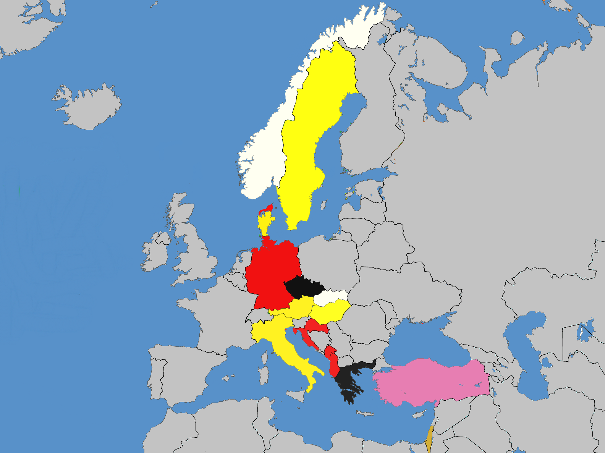
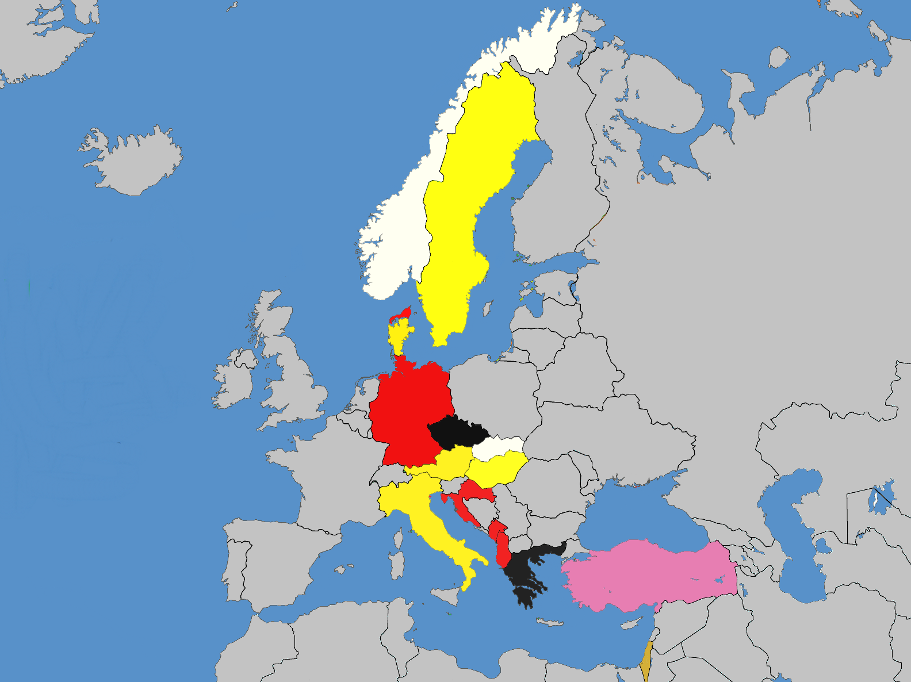

Prosím zadajte svoje meno:
Súhlasím so spracovaním osobných údajov

 

Inštrukcie
Adventná výzva.
V tých dňoch vyšiel rozkaz od cisára Augusta vykonať súpis ľudu po celom svete. Tento prvý súpis sa konal, keď Sýriu spravoval Kvirínius. A všetci šli dať sa zapísať, každý do svojho mesta. Vybral sa aj Jozef z galilejského mesta Nazaret do Judey, do Dávidovho mesta, ktoré sa volá Betlehem, lebo pochádzal z Dávidovho domu a rodu, aby sa dal zapísať s Máriou, svojou manželkou, ktorá bola v po žehnanom stave. Kým tam boli, nadišiel jej čas pôrodu...
Ale to už trochu predbieham, pozývam ťa na dobrodružnú cestu do minulosti, počas ktorej budeme putovať nielen v čase, ale aj priestore. Že sa to nedá? To sa ešte uvidí...
Každý deň spolu otvoríme jednu guľu na vianočnom stromčeku. Vo vianočnej guli sa ukrýva jedna časť z príbehu, ktorú si budeš môcť vypočuť, a úloha, ktorú môžeš vypracovať.
Poďme si o adventnej výzve povedať viac, ale pekne po poriadku.
1. Vianočné gule sa budú otvárať rovnako ako okienka na adventnom kalendári – na každý deň je určená jedna. Ak v niektorý deň nestihneš vianočnú guľu otvoriť, nezúfaj, budú sa dať otvoriť aj spätne.
2. Po otvorení gule si môžeš vypočuť časť príbehu, príbeh na seba nadväzuje, preto bude fajn, ak ich budeš počúvať pekne za sebou.
3. Keď si vypočuješ audionahrávku, tak sa môžeš pustiť do pripravenej úlohy. Výsledkom každej úlohy bude fotka, ktorú pošleš/nahráš na stránku. Úloha je určená na každý deň, preto nie je možné ju poslať dodatočne. Ako by povedal evanjelista Matúš: „každý deň má dosť svojho trápenia“.
4. Fotku je potrebné poslať každý deň najneskôr do 21.00, po tomto termíne už nebude akceptovaná.
5. Za vypracované úlohy sa budú zbierať bonusové body:
• za 7 správne vypracovaných úloh získaš 1 bonusový bod,
• za 14 správne vypracovaných úloh získaš 2 bonusové body,
• za 22 správne vypracovaných úloh získaš 3 bonusové body,
• ak správne vypracuješ všetky úlohy, získaš 3 bonusové body a ešte malý darček k tomu.
6. Vypracovanie úloh je dobrovoľné, ak niektorú z nich nechceš, nevieš alebo nemôžeš vypracovať, je to v poriadku, vypočuj si aspoň nahrávku.
7. Vypracovanie úlohy si okrem šikovnosti a času vyžaduje aj námahu, lebo „čo nič nestojí, za nič nestojí“, takže pracuj precízne a zodpovedne. Organizátori adventnej výzvy si vyhradzujú právo odfláknuté úlohy nezapočítať do celkového počtu vypracovaných úloh.
Verím, že rovnako ako Joachim budeš aj ty každý deň nedočkavo otvárať jednotlivé gule, aby si sa dozvedel, ako adventný príbeh pokračuje.
„Do Betlehema, do Betlehema!“